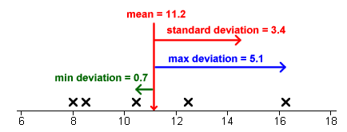
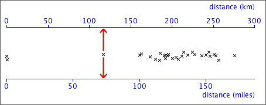
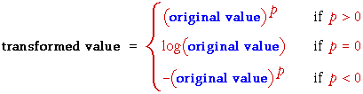

If you don't want to print now,
Unhelpful detail when comparing groups
Dot plots, stem and leaf plots and histograms contain a lot of detail about the distribution of values in a data set. This level of detail is useful when examining a single data set, but when several groups of values are being compared, the detail distracts from the main differences between the groups.
For example, the jittered dot plots below do not concisely summarise the differences between the five groups.
Five-number summary
Five values are enough to capture a lot of information about the distribution of values in a data set.
These values split the data set into four groups with approximately equal numbers of values.
Box plot
A box plot displays the five-number summary graphically.

Details
The median, m, is the middle value if there is an odd number of values in the data set. If there is an even number of values, the median is the average of the middle two.
Different authors give slightly different definitions for the upper and lower quartiles. One definition of the lower quartile is the median of the lowest half of the data — i.e. of the values lower than m. (The upper quartile would then be defined as the median of the top half of the values.)
Provided you are consistent, different definitions of the quartiles should lead you to the same conclusions.
Box plots and histograms
Since the median and quartiles split the data set into quartiles, they also split a histogram of the data into four approximately equal areas.

What does a box plot tell you about the distribution?


Outliers and skew distributions
Basic box plots cannot show whether the minimum and maximum in a distribution are outliers or simply the end of skew distributions.

Improved box plot
Box plots are often drawn with 'outliers' shown as separate crosses. The usual definition of 'outliers' in box plots are values more than 1.5 interquartile ranges outside the two quartiles.

Box plots and clusters
Box plots cannot show clusters in data.

Before using a box plot, always look at the data with a dot plot or histogram to make sure that there are no clusters.
Box plots to compare groups
To display the distribution of values in a single set of data, a dot plot or histogram is more useful than a box plot. However for comparison of two or more groups of values box plots are particularly effective — they highlight differences between the centres, spreads of values and skewness of the groups.

Stability of the shape of box plots
When used for small data sets, features in dot plots, stem and leaf plots and histograms are relatively unstable. Although more stable, the shapes of box plots also vary if different data are collected from the same process.
Care must be taken not to over-interpret the shape of box plots for small data sets.
As with other displays, the larger the data set, the more stable the box plots become.
Summarising centre and spread
Two important aspects of a distribution of values are particularly important.

We will describe centre and spread with numerical values called summary statistics. They provide particularly concise and meaningful comparisons of different groups.
Simple summaries of centre and spread
Information from median and interquartile range
Given the median and interquartile range, it is possible to sketch a bell-shaped histogram that matches these values. Such a 'guess' is often close to the actual distribution of values.

Median
Half of the data values are below the median and half are above it:

Mean
The mean is:

If each value in a dot plot was a solid object resting on a beam with negligible mass, the mean is the value at which the beam will balance.

Because of the leverage exerted by points far from the centre, the mean is further into the tail of a skew distribution than you might expect.
Although both describe aspects of the 'centre' of a distribution, the median and mean are not the same and can occasionally have very different values.
Social vs economic indicator
For some data sets, the median can be considered to be a social indicator, whereas the mean can be interpreted as an economic indicator. In a company,
Outliers
An outlier has little effect on the median, but affects the mean more strongly. The median is said to be more robust.
Skew distributions
When a distribution is fairly symmetrical, the mean and median are similar, but if the distribution is skew, then the mean is usually further into the tail of the distribution than the median.

Simple measures of spread
These are (relatively) easy to understand and explain to others, but neither are commonly used.
Standard deviation
The standard deviation is a 'typical' distance of values from the sample mean.

The standard deviation is denoted by the letter s and is defined by:

The numerator,  , depends on the distances of the values to the mean, so it will be small if the values are all close to the mean and big if they are far from the mean.
, depends on the distances of the values to the mean, so it will be small if the values are all close to the mean and big if they are far from the mean.
Variance
The square of the standard deviation, s2, is called the sample variance. Variances are sometimes reported and used but standard deviations are easier to interpret since they have the same units as the original data (e.g. kilograms or dollars).
'Quarter-range' rule of thumb
For many data sets, the standard deviation is just under a quarter of the range.
 |
This is a simple rule, but is only very approximate. The standard deviation can be more than a quarter the range in distributions with short tails or much less if there are long tails or outliers.
The 70-95-100 rule of thumb
The 70-95-100 rule is more accurate. In many distributions,
The 70-95-100 rule holds approximately for most reasonably symmetric data sets, but for skew data or distributions with long tails, outliers or clusters, it is often less accurate.
Understanding the definition of the standard deviation is much less important than knowing its properties and having a feel for what its numerical value tells you about the data.
Guessing s from histogram
About 95% of the values should be within 2s of the mean, so after dropping the top 2.5% and bottom 2.5% of the values (histogram area), the remainder should span approximately 4s. Dividing this range by 4 should approximate the standard deviation.

Sketching a histogram from the mean and s
Similarly, you should be able to draw a rough sketch of a symmetric histogram with any mean and standard deviation that you are given. (It would be centred on the mean and 95% of the area would be within 2s of this.)
The shape of a distribution
| The mean and standard deviation hold no information about the shape of a distribution, other than its centre and spread. |
Many different distributions have the same mean and standard deviation.

Clusters, outliers and skewness are important features of a data set and should influence the analysis that you perform and the conclusions that you reach. In particular, if you ignore outliers or clusters, you could easily reach the wrong conclusions.
| It is therefore essential that you look at a graphical display of a distribution before summarising with a mean and standard deviation. |
Calculating the mean from a frequency table
| x | ƒx | ||
|
|
||
| total | 600 |
|---|
The mean can be easily calculated from this table:

More generally,

where the summation is over the distinct values in the data set, rather than all individuals.
Calculating the standard deviation
A similar formula holds for the standard deviation, using the formula

Linear transformations
When the values are replaced by other using an equation of the form
new value = a + b × old value
we say that there has been a linear transformation of the original values. The original and transformed data can be displayed together with dual axes.

Centre and spread
The centre and spread of the data are different, but the shape of the distribution otherwise remains unchanged. The mean and standard deviation are related:
new mean = a + b × old mean
new sd = |b| × old sd
Note that if the scale factor, b, is negative, we must change its sign since the standard deviation must always be positive.
Most other measures of centre (e.g. the median) and spread (e.g. the interquartile range) are similarly related.
Nonlinear transformations
Nonlinear transformations arise when the values are replaced by a nonlinear function of the original measurements, such as their logarithm or inverse. They have a more fundamental effect on the shape of a distribution than linear transformations.
The most commonly used nonlinear transformation is:
new value = log10 (old value)
Natural logarithms (base e) have a similar effect on the distribution of values but base-10 logarithms are easier to interpret so we use them here.
Properties of logarithms
Consider four values 1, 10, 100 and 1000. The first two values are much closer to each other than the last two values. However their logarithms are 0, 1, 2 and 3, so their logarithms are evenly spaced out.
Effect on the shape of a distribution
A logarithmic transformation selectively spreads out low values in a distribution and compresses high values. It is therefore useful before analysing skew data with a long tail towards the high values. It will spread out a dense cluster of low values and may detect clustering or outliers that would not be visible in graphical displays of the original data.

'Quantities'
Logarithmic transformation can only be used for data sets consisting of positive values — logarithms are undefined for negative or zero values. They are therefore particularly useful for quantities — i.e. amounts of something. Indeed, many researchers routinely apply logarithmic transformation to quantity data before analysis.
When are they effective?
A log transformation affects the shape of the distribution most when the ratio of the largest to the smallest value in the data is large. When this ratio is less than 10 (one order of magnitude) then the transformation has much less influence on the shape of the distribution, as in the data set below.

Power transformations
A more general family of transformations that is flexible enough to reduce or eliminate the skewness in a wide range of data sets is:

This family of power transformations includes many common ones:

Effect of power transformations
Power transformations affect the skewness of data.
If a power transformation with p > 1 is applied to data with a symmetric distribution, it will make the data skew with a long right tail. If the power transformation has p < 1, the distribution will become one with a long left tail.
In practice, power transformations are used to do the opposite. They can change many skewness distributions into fairly symmetric ones.